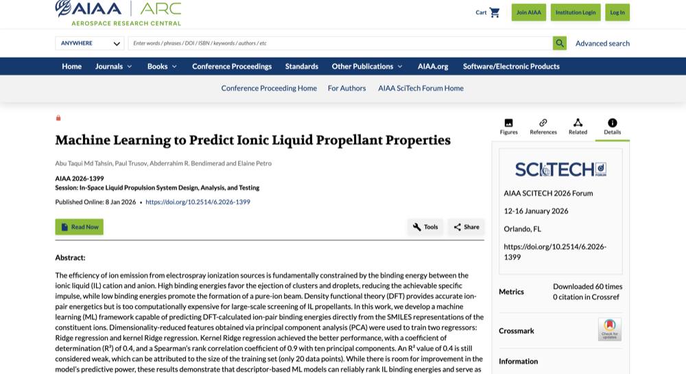
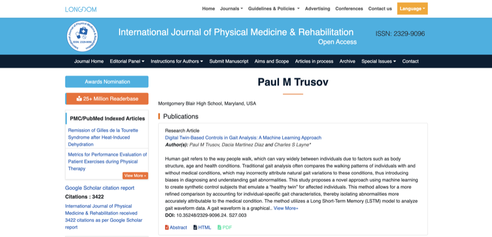
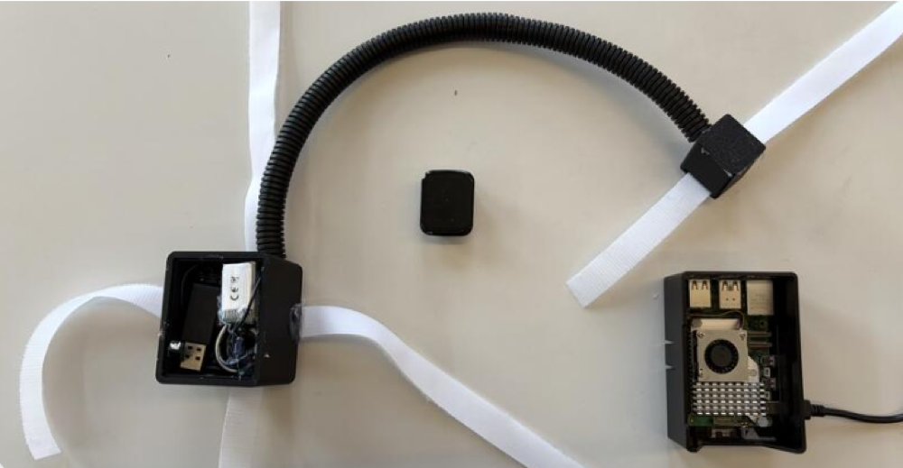

Publications
Machine Learning to Predict Ionic Liquid Propellant Properties. Tahsin Abu Taqui Md, Paul Trusov, Abderrahim R. Bendimerad, and Elaine Petro. AIAA SciTech Forum, 2026.

Comparative Analysis of Charge-State Determination Methods in Mass-Spectrometry-Based Proteomics. Paul Trusov, Aleksey Ogurtsov, Oleg Obolensky, and Yi-Kuo Yu. Proceedings of the 74th ASMS Conference on Mass Spectrometry and Allied Topics, San Diego, CA. Citation ID 327953, ThP 349 (2026).
Digital Twin-Based Controls in Gait Analysis: A Machine Learning Approach. Paul M. Trusov, Dacia Martinez Diaz, and Charles S. Layne. International Journal of Physical Medicine & Rehabilitation, 2024.

Articles
Student team's physical therapy tool wins third place at YHack. Cornell Bowers CIS.
